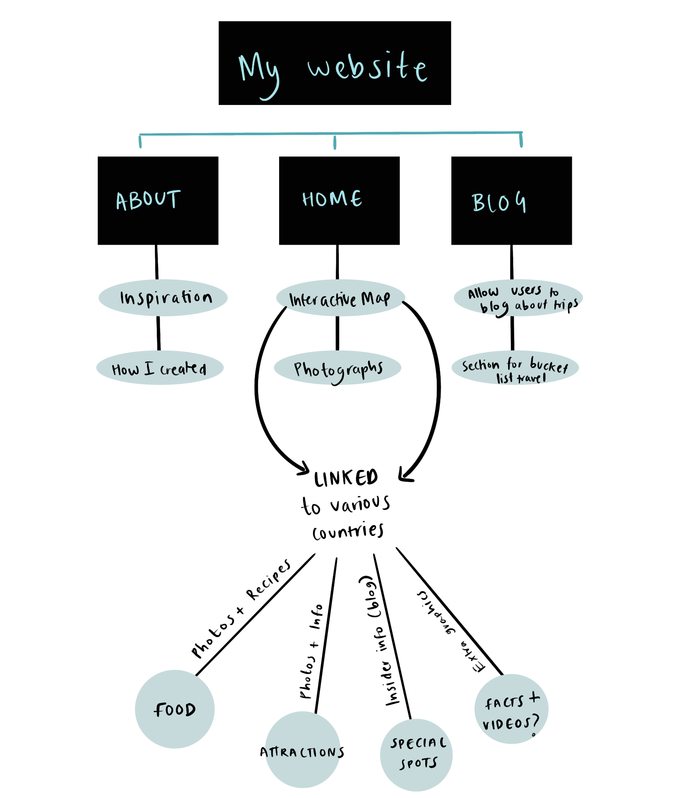

"The website will incoporate bright colours in a pastel tone that work well together and are vibrant for the user. There will be access and clicking to multiple pages without connecting various HTML pages together."
The interactive travel experience allows for users to also log in their own travel experiences in the past or the future. They can also make a list of places they would like to visit after the pandemic is over and what they would like to do there. Further, there will be mini hand-drawn animated doodles that will move around with the website and create a more interactive experience when a user clicks a button.